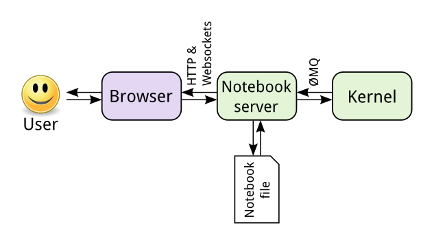

¿Qué es Jupyter?
Contenido
5. ¿Qué es Jupyter?¶
Jupyter es un proyecto que incorpora
El formato
notebookUn servidor web para editar y visualizar
notebooksUn protocolo de mensajería para comunicar el
notebookcon unkernel
El kernel recibe código y retorna los resultados al notebook. En general trabajaremos con IPython, el intérprete de Python interactivo, como kernel.
El notebook es un formato relativamente nuevo que combina
código
visualizaciones
ecuaciones
texto enriquecido
imágenes, audio, video
interfaces de usuario (GUI)
entre otros
esto lo hace ideal para
explorar y analizar datos de forma interactiva
comunicar y compartir resultados
crear “narrativas científicas” interactivas
Ejemplos
Revisa uno o más de los siguientes ejemplos para hacerte una idea de lo que se puede hacer con Jupyter
Visualización de datos de censo (Estados Unidos): https://anaconda.org/jbednar/census/notebook
Jupyter notebook sobre reacciones químicas: https://nbviewer.jupyter.org/gist/greglandrum/4316430
Un tutorial de GIT escrito en jupyter: https://nbviewer.jupyter.org/github/fperez/reprosw/blob/master/Version Control.ipynb
Este libro fue creado en base a jupyter notebooks
5.1. Qué no es Jupyter¶
Jupyter no es un reemplazo para una IDE completa como pycharm o vscode ni editores como vim o emacs. Jupyter es un complemento.
No es directo ni sencillo importar código que está en jupyter notebook. Por razones como esta los notebooks no suelen ser usados para tareas de producción
Si tu notebook tiene rutinas que pueden ser utilizadas por otros notebooks o scripts lo mejor es escribir la rutina como un módulo regular de Python y luego importarlo desde el notebook
Consejo
Usando la magia %autoreload 2 puedes hacer cambios “en vivo” en los módulos importados por el notebook sin tener que reiniciarlo
Revisa la siguiente presentación sobre Buenas prácticas con Jupyter notebook para más consejos
5.2. ¿Cómo funciona Jupyter?¶
El servidor jupyter es el encargado de administrar los
notebooksLos usuarios interactuan con los
notebooksa través de un frontend webEl proceso encargado de correr los códigos se denomina
kernelEl servidor conecta los notebooks con el kernel usando la librería de mensajería ZeroMQ
La siguiente figura muestra el flujo detallado
{kind=link}
¿Qué lenguajes puedo usar?
Existen kernels de Python, Julia, Ruby, C y otros lenguajes. En este libro nos enfocaremos en el kernel Interactive Python (IPython)
IPython es un interprete de Python que ofrece varias mejoras tales como
autocompletación de path y modulos
acceso desde terminal a documentación y código fuente
búsqueda histórica de comandos
instrucciones especiales llamadas magics que serán vistas más adelante
Nota
IPython reemplaza al intérprete convencional de Python. No necesitamos Jupyter para utilizar IPython, simplemente escribe ipython en un terminal
Nota
Además del frontend por defecto existe jupyter lab. Es último tiene una interfaz de usuario más similar al de una IDE completa.
5.3. Creando un ambiente para cómputo interactivo con jupyter¶
Utilizando conda creamos un ambiente
conda create -n info147 python=3.10 pip
Activa el ambiente
conda activate info147
Instala jupyter y las librerías de cómputo científico
conda install jupyter numpy matplotlib pandas scipy ipympl
Finalmente inicia jupyter escribiendo en la terminal
jupyter notebook
Esto abrirá una pestaña de navegador (browser) apuntada en la dirección
localhost:8888